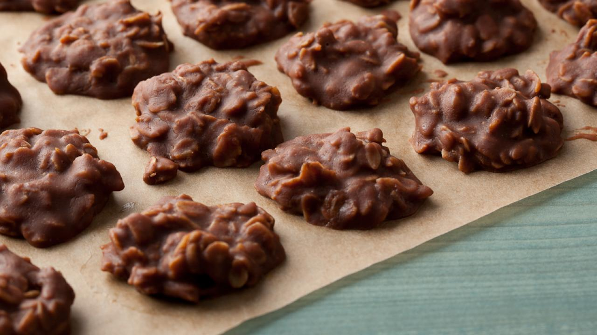

<!DOCTYPE html>
<html lang="en">
<head>
    <meta charset="UTF-8">
    <meta http-equiv="X-UA-Compatible" content="IE=edge">
    <meta name="viewport" content="width=device-width, initial-scale=1.0">
    <link rel="stylesheet" href="css/style.css">
    <title>No Bake Cookies Recipe</title>
</head>
<body>
    
</body>
</html>
<h1>No Bake Cookies Recipe</h1>

<h2>A fun and easy no bake cookie</h2>
<p>Many no bake cookies recipes are quite similar. Most call for some variation on the following ingredients: sugar, milk, butter or margarine, cocoa powder, peanut butter, vanilla extract and oatmeal. Some additions to the cookies could include chocolate chips, nuts, raisins or honey.</p>
<h3>Ingredients</h3>
<ul>
    <li>Sugar</li>
    <li>Butter</li>
    <li>Chocolate</li>
    <li>Oats</li>
    <li>Penutbutter</li>
</ul>
<ol>
    <li>Melt your chocolate</li>
    <li>Stir chocolate, penutbutter, sugar, butter together</li>
    <li>Spoon out cookie size blobs</li>
    <li>Let them sit in the fridge for an hour</li>
</ol>